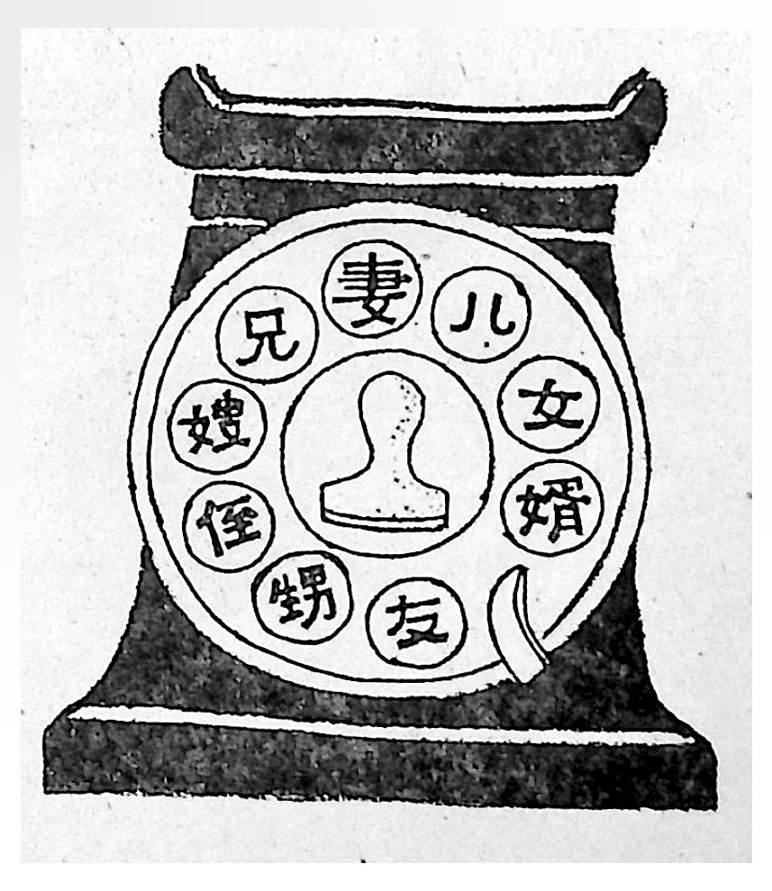

唐少仪画 《人事》1987年第12期（总第27期），第39页
内线（讽刺诗画）
Inside Line (satirical poem drawing)
- Text in the drawing
- 妻 / 儿 / 女 / 婿 / 友 / 甥 / 侄 / 嫂 / 兄
Wife / Son / Daughter / Son-in-law / Friend / Nephew / Nephew / Sister-in-law / Elder brother - Passage illustrated
“大侄子啊？噢，三贤婿！考察报告？我马上批！”……“私话”当作“公话”打，一条热线，连着这么多亲戚……
“Nephew, is that you? Oh — my third son-in-law! The evaluation report? I'll sign it right away!” … Private calls made as official calls: one hot line, connected to so many relatives…From the satirical poem 内线 (“Inside Line”) by Xifang Shuo, on the same page. 西方朔《内线》（讽刺诗），同页
- Description
- An office telephone whose dial holes are labeled with relatives and friends — wife, son, daughter, son-in-law, nephews, sister-in-law, brother — around an official seal at the centre.
- Note
- The poem is the stream of an official's calls on his office line: arranging a colour TV for an aunt, signing an evaluation report for a son-in-law, interceding for a cousin's jailed son, ordering liquor and fish for tonight's banquet — “treating private calls as public ones.” 外甥 and 侄 are both “nephew” in English (sister's son, brother's son).
- Artist
- Tang Shaoyi 唐少仪 (drawn)
- Published in
- 《人事》1987年第12期（总第27期）, p. 39
- Themes
- Nepotism · Privilege · Story illustrations

Cite
Tang Shaoyi, “内线（讽刺诗画）” [Inside Line (satirical poem drawing)], Renshi (Personnel) 《人事》, 1987, no. 12, p. 39.